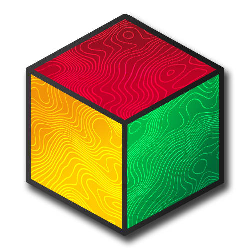
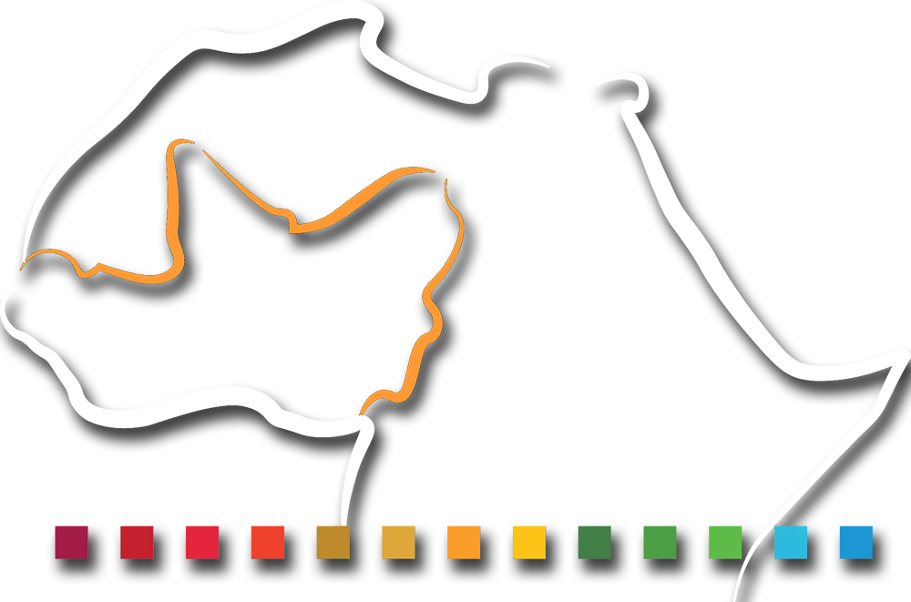
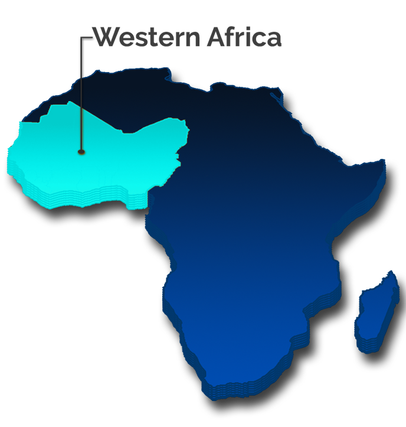
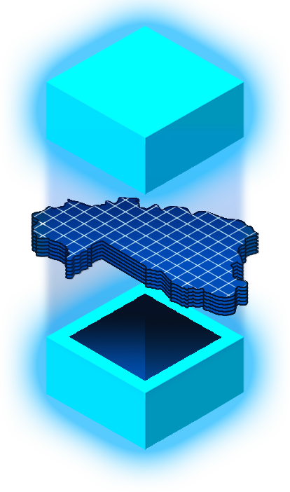

Active Project
West African Data Cube
About the Project
WASCAL (West Africa Science Service Center on Climate Change and Adapted Land Use)

The WASCAL (West Africa Science Service Center on Climate Change and Adapted Land Use) project was launched in 2010. Ever since it was funded by the German Federal Ministry of Education and Research (BMBF) with the aim of pooling regional competences and expertise with a focus on climate change, and its impact on agrarian and ecological land use systems and on developing and promoting adaptation strategies.
Essential results in the first project phase (2010–2017) are, inter alia, the formation and establishment of the WASCAL Competence Center (CoC) in Ouagadougou (Burkina Faso) as well as the WASCAL graduate schools. More than 180 PhD and Master students successfully completed their work on topics such as drought events and increasing rainfall variability, savanna land use systems and crop modelling, mitigation strategies and resilience, thereby contributing to improved regional understanding of climate change and food security.
The sustainable and future-proof continuation of these institutions is now in the focus of the WASCAL-DE-Coop project from 2019 to 2022. WASCAL-DE-Coop aims to strengthen existing cooperation with West African countries (www.wascal.org) and to expand the partner network to other countries in West Africa.
The WASCAL-DE-Coop project is coordinated by the Department of Remote Sensing at the Julius-Maximilians-Universität Würzburg (JMU). Under the grant number 01LG1808A, WASCAL-DE-Coop is funded by the German Federal Ministry of Education and Research (BMBF) through the project carrier at the German Aerospace Center (DLR).
Activities
Project Activities

- Coordination of graduate schools and professional exchange
- Training in field data sampling and remote sensing analysis
- Monitoring human-land interactions, agricultural areas, and fire dynamics
- Supporting science-based decision-making through policy briefs
- Creating IT infrastructure and data cube systems for operational applications
Facts & Figures
Available Datasets

- Landsat 7 — 30m resolution, 1999–2019
- Landsat 8 — 30m resolution, 2013–2020
- Sentinel-1 — 10m resolution, 2019–2020
- Sentinel-2 L2A — 10m / 20m / 60m, 2016–2020